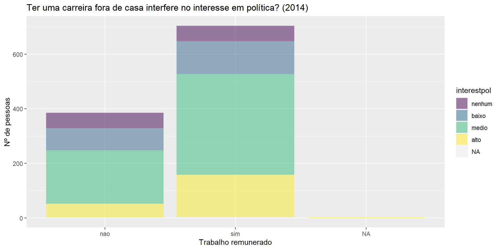
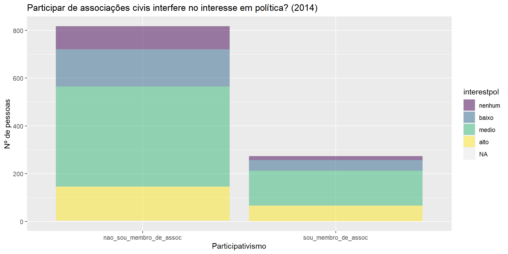
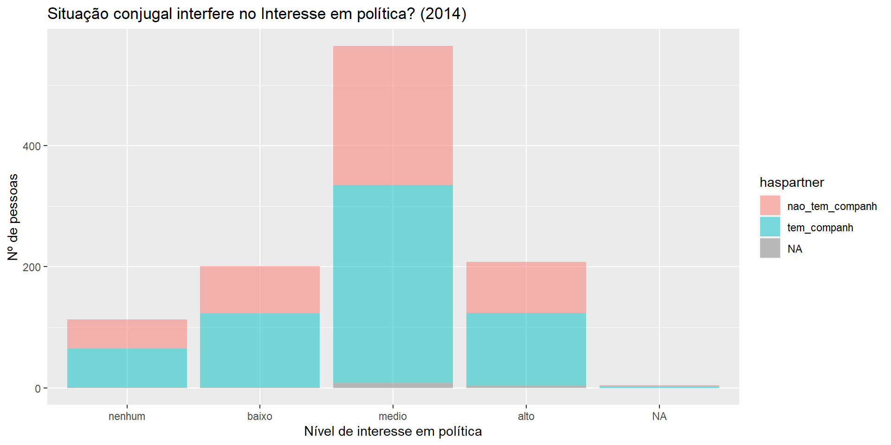
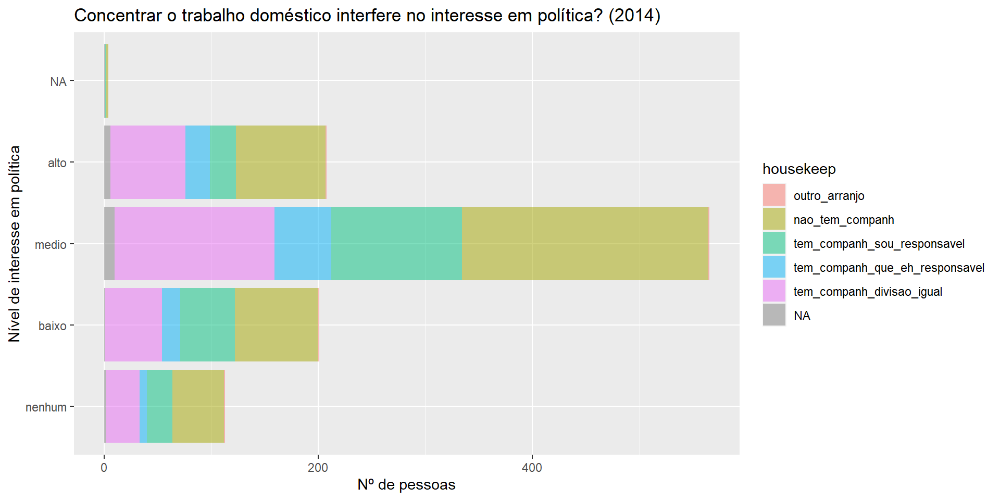
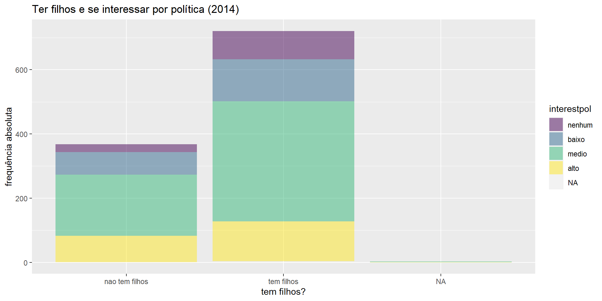
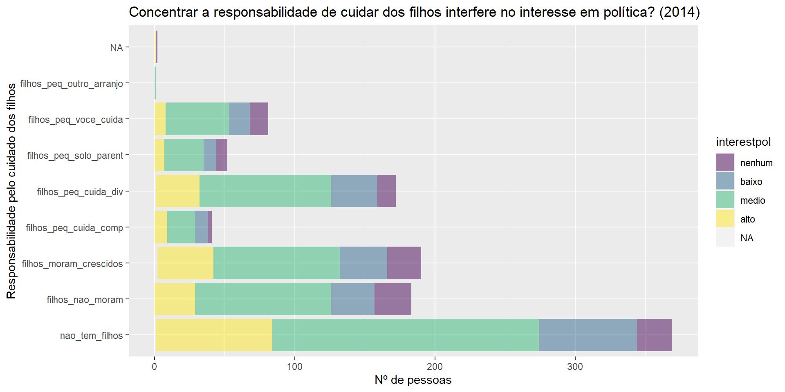
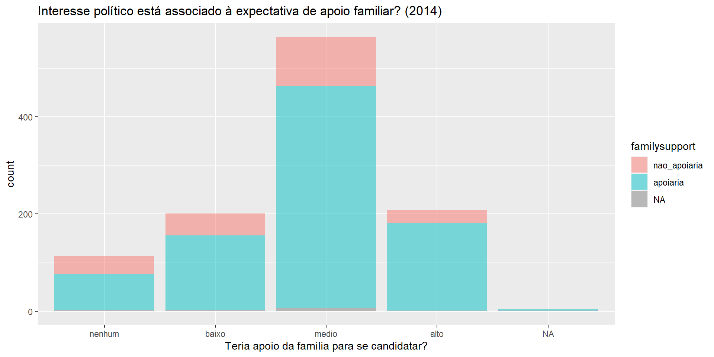
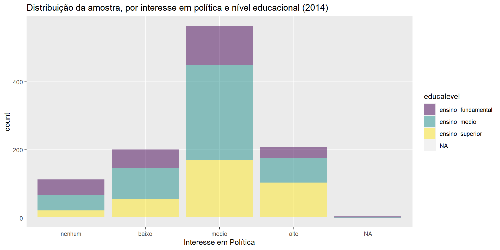

Perspectivas filosófico-normativas x perspectivas empíricas
Mix de discurso político e texto acadêmico?
Construções teóricas de base lógica dedutiva
Necessidade de demonstração e teste face aos dados
OBJETO ESPECÍFICO
Estudo da questão da subrepresentação política de mulheres
Testar em base empírica algumas hipóteses recorrentes em textos feministas
Estes incluem explicações de ordem cultural, institucional, desenvolvimentista, estruturalista, entre outras.
Metodologia
Análise de dados de survey:
pesquisa amostral de opinião pública nacional, feita pelo Instituto DataSenado
amostra probabilística em todos os níveis
entrevistas telefônicas
cerca de 1100 participantes
universo: pessoas residentes no Brasil, maiores de 16 anos, com acesso a telefone fixo.
Metodologia
Estatística descritiva
Teste de hipóteses:
teste de McNemar
regressão logística
Leitura de Pacotes
ver código de objeto
currentpacks =lapply(c("usethis","gitcreds","tidyverse","bookdown","blogdown","quarto","mice","labelled","Hmisc","prevalence","survey","rtools42","tesseract","tinytex","xelatex","revealjs","palmerpenguins","downlit","xml2","htmlwidgets","shiny","flexdashboard","citation","dplyr","dtplyr","rmarkdown","rvest","polite", "gert","gh","credentials","yaml","haven","janitor","lubridate","readxl","stringr","magrittr","srvyr","gcookbook","report","gghighlight","moderndive","skimr","infer","parsnip","ggplot2","rstatix","ggpubr"), require, character.only = T )# definir working directorysetwd("~/R Projects/listaetrabfinal")
Importação dos dados
ver código de objeto
polbr <-read_delim("polbr2014final.csv", delim =";", col_names =TRUE,na =c("","NA"," NA","NA ","NANA","NA "," "),col_select =c("estado":"pesos"),col_types =cols( "estado"="f","regiao"="f","interestpol"=col_factor(levels =c("nenhum", "baixo","medio","alto"),ordered =TRUE,include_na =TRUE),"high_interest"=col_factor(levels =c("nao_alto", "alto"),ordered =FALSE,include_na =TRUE),"med_interest"=col_factor( levels =c("nao_medio","medio"),ordered =FALSE,include_na =TRUE),"high_med_interest"=col_factor( levels =c( "baixo_sem","alto_medio"),ordered =FALSE,include_na =TRUE),"low_interest"=col_factor(levels =c("nao_baixo","baixo"),ordered =TRUE,include_na =TRUE),"low_no_interest"=col_factor(levels =c( "alto_medio","baixo_sem"),ordered =TRUE,include_na =TRUE),"sem_interest"=col_factor(levels =c("algum_interesse","nenhum_interesse"),ordered =FALSE,include_na =TRUE),"votedifsex1"=col_factor(levels =c("na_misteriosos","nunca_votou__indiferentes","nao_faz_diferenca__mentes_abertas","simhomens_engajados/as_patriarcado","simmulheres_engajados/as_feministas","simna_envergonhados"),ordered =FALSE,include_na =TRUE),"votedifsex2"=col_factor(levels =c("nunca_votou","nao_faz_diferenca","faz_diferenca"),ordered =FALSE,include_na =TRUE),"evervotefem"=col_factor(levels =c("nunca votou", "sim","nao")),"faltapoiofam"=col_factor(levels =c("outro","falta de apoio da familia"),ordered =FALSE,include_na =TRUE),"dific_conc_h"=col_factor(levels =c("outro","dificuldade de concorrer com um homem"),ordered =FALSE,include_na =TRUE),"apoio_party"=col_factor(levels =c("outro","falta_apoio_party"),ordered =FALSE,include_na =TRUE),"falta_interesse"=col_factor(levels =c("outro","falta_interesse"),ordered =FALSE,include_na =TRUE),"div_sexual_trab"=col_factor(levels =c("outro","tarefas_domesticas"),ordered =FALSE,include_na =TRUE),"reasonparty"=col_factor(levels =c("na","falta de apoio dos partidos politicos","falta de interesse por politica","dificuldade de concorrer com um homem","falta de apoio da familia","tempo dedicado as tarefas domesticas", "outro"), ordered =FALSE, include_na =TRUE),"presidsymbolic"=col_factor(levels =c("nao influencia","influencia"),ordered =FALSE,include_na =TRUE),"femrightsconhece"=col_factor(levels =c("nao_conhece","conhece")),"femrightsenough"=col_factor(levels =c("voce desconhece a legislacao","insuficientes","suficientes"),ordered =FALSE, include_na =TRUE),"parityagree"=col_factor(levels =c("discorda","concorda"),ordered =FALSE,include_na =TRUE), "quotapunish"=col_factor(levels =c( "nao","sim"),ordered =FALSE,include_na =TRUE), "quotasenathird"=col_factor(levels =c("contra","a favor"),ordered =FALSE,include_na =TRUE), "haspartner"=col_factor(levels =c("nao_tem_companh", "tem_companh"),ordered =FALSE,include_na =TRUE),"housekeep"=col_factor(levels =c("outro_arranjo","nao_tem_companh","tem_companh_sou_responsavel","tem_companh_que_eh_responsavel","tem_companh_divisao_igual"),ordered =FALSE, include_na =TRUE), "haskids"=col_factor(levels =c("nao tem filhos","tem filhos"),ordered =FALSE, include_na =TRUE), "haskidsin"=col_factor(levels =c("nao_tem_filhos","filhos_nao_moram","filhos_moram"),ordered =FALSE,include_na =TRUE), "haskidsinlittle"=col_factor(levels =c("nao_tem_filhos","filhos_nao_moram","filhos_moram_crescidos","filhos_moram_pequenos"),ordered =FALSE, include_na =TRUE),"kidstotal"=col_factor(levels =c("nao_tem_filhos","filhos_nao_moram","filhos_moram_crescidos","filhos_moram_pequenos","filhos_peq_cuida_comp","filhos_peq_cuida_div","filhos_peq_solo_parent","filhos_peq_voce_cuida","filhos_peq_outro_arranjo"),ordered =FALSE, include_na =TRUE),"wannakids"=col_factor(levels =c("ja_tenho_filhos","quero_ter_filhos","nao_quero_ter_fihos"),ordered =FALSE,include_na =TRUE), "paidjob"=col_factor(levels =c("nao","sim"),ordered =FALSE,include_na =TRUE), "assoc"=col_factor(levels =c("nao_sou_membro_de_assoc", "sou_membro_de_assoc"),ordered =FALSE,include_na =TRUE), "levelassoc"=col_factor(levels =c( "nao_sou_membro_de_assoc","sou_membro_de_assocna","sou_membro_de_assocbaixo","sou_membro_de_assocmedio","sou_membro_de_assocalto"),ordered =FALSE,include_na =TRUE),"familysupport"=col_factor(levels =c("nao_apoiaria","apoiaria"),ordered =FALSE, include_na =TRUE), "partnersupport"=col_factor(levels =c("nao_apoiaria","apoiaria","nao_tem_companh"),ordered =FALSE, include_na =TRUE), "partnchangcitsupport"=col_factor(levels =c("nao_apoiaria","apoiaria","nao_tem_companh"),ordered =FALSE, include_na =TRUE), "candwchance"=col_factor(levels =c("nao","sim"),ordered =FALSE,include_na =TRUE), "thinkcand"=col_factor(levels =c("nao_nunca_pensou", "sim_mas_nunca_se_candidatou","sim_e_ja_se_candidatou"),ordered =FALSE,include_na =TRUE), "sex"=col_factor(levels =c("masculino","feminino"),ordered =FALSE,include_na =TRUE), "ageinterval"=col_factor(levels =c("de 16 a 19","de 20 a 29","de 30 a 39","de 40 a 49","de 50 a 59","60 anos ou mais"),ordered =TRUE,include_na =TRUE), "educalevel"=col_factor(levels =c("ensino_fundamental","ensino_medio","ensino_superior"),ordered =TRUE,include_na =TRUE),"incomeinterval"=col_factor(levels =c("sem renda","ate 2 sm","mais de 2 a 5 sm","mais de 5 a 10 sm","mais de 10 sm"), ordered =TRUE,include_na =TRUE), "religion"=col_factor(levels =c("catolica","sem religiao ou crenca","outra","espirita","evangelica"),ordered =FALSE,include_na =TRUE),"pesos"="n"))summary(polbr)
estado regiao interestpol high_interest
sao paulo :232 norte : 95 nenhum:113 nao_alto:883
minas gerais :111 nordeste :307 baixo :201 alto :208
rio de Janeiro : 87 centro-oeste: 81 medio :565
bahia : 80 sudeste :452 alto :208
rio grande do sul: 60 sul :156 NA's : 4
parana : 59
(Other) :462
high_med_interest med_interest low_interest low_no_interest
baixo_sem :314 nao_medio:526 nao_baixo:890 alto_medio:773
alto_medio:773 medio :565 baixo :201 baixo_sem :314
NA's : 4 NA's : 4
sem_interest votedifsex1
algum_interesse :974 na_misteriosos : 19
nenhum_interesse:113 nunca_votou__indiferentes : 37
NA's : 4 nao_faz_diferenca__mentes_abertas :909
simhomens_engajados/as_patriarcado : 48
simmulheres_engajados/as_feministas: 62
simna_envergonhados : 16
votedifsex2 evervotefem faltapoiofam
nunca_votou : 37 nunca votou: 37 outro :1020
nao_faz_diferenca:909 sim :836 falta de apoio da familia: 71
faz_diferenca :126 nao :211
NA's : 19 NA's : 7
dific_conc_h apoio_party
outro :885 outro :667
dificuldade de concorrer com um homem:206 falta_apoio_party:424
falta_interesse div_sexual_trab
outro :821 outro :1038
falta_interesse:270 tarefas_domesticas: 53
reasonparty presidsymbolic
na : 41 nao influencia:366
falta de apoio dos partidos politicos:424 influencia :703
falta de interesse por politica :270 NA's : 22
dificuldade de concorrer com um homem:206
falta de apoio da familia : 71
tempo dedicado as tarefas domesticas : 53
outro : 26
femrightsconhece femrightsenough parityagree
nao_conhece:501 voce desconhece a legislacao:501 discorda:276
conhece :590 insuficientes :367 concorda:795
suficientes :203 NA's : 20
NA's : 20
quotapunish quotasenathird haspartner
nao :352 contra :290 nao_tem_companh:442
sim :720 a favor:769 tem_companh :635
NA's: 19 NA's : 32 NA's : 14
housekeep haskids
outro_arranjo : 4 nao tem filhos:368
nao_tem_companh :442 tem filhos :721
tem_companh_sou_responsavel :222 NA's : 2
tem_companh_que_eh_responsavel:100
tem_companh_divisao_igual :303
NA's : 20
haskidsin haskidsinlittle kidscare
nao_tem_filhos :369 nao_tem_filhos :369 Length:1091
filhos_nao_moram:183 filhos_nao_moram :183 Class :character
filhos_moram :538 filhos_moram_crescidos:190 Mode :character
NA's : 1 filhos_moram_pequenos :347
NA's : 2
kidstotal wannakids paidjob
nao_tem_filhos :369 ja_tenho_filhos :729 nao :385
filhos_moram_crescidos:190 quero_ter_filhos :271 sim :704
filhos_nao_moram :183 nao_quero_ter_fihos: 91 NA's: 2
filhos_peq_cuida_div :172
filhos_peq_voce_cuida : 81
(Other) : 94
NA's : 2
assoc levelasOUTDATED
nao_sou_membro_de_assoc:818 Length:1091
sou_membro_de_assoc :273 Class :character
Mode :character
levelassoc familysupport partnersupport
nao_sou_membro_de_assoc :818 nao_apoiaria:210 nao_apoiaria :112
sou_membro_de_assocna : 1 apoiaria :869 apoiaria :518
sou_membro_de_assocbaixo: 89 NA's : 12 nao_tem_companh:442
sou_membro_de_assocmedio:135 NA's : 19
sou_membro_de_assocalto : 48
partnchangcitsupport candwchance thinkcand
nao_apoiaria :217 nao :390 nao_nunca_pensou :904
apoiaria :402 sim :697 sim_mas_nunca_se_candidatou:159
nao_tem_companh:442 NA's: 4 sim_e_ja_se_candidatou : 24
NA's : 30 NA's : 4
sex ageinterval educalevel
masculino:424 de 16 a 19 : 74 ensino_fundamental:252
feminino :667 de 20 a 29 :206 ensino_medio :486
de 30 a 39 :204 ensino_superior :343
de 40 a 49 :218 NA's : 10
de 50 a 59 :183
60 anos ou mais:203
NA's : 3
incomeinterval religion pesos
sem renda : 99 catolica :563 Min. : 174646
ate 2 sm :383 sem religiao ou crenca:110 1st Qu.: 15866487
mais de 2 a 5 sm :290 outra : 34 Median : 28826703
mais de 5 a 10 sm:121 espirita : 66 Mean : 44005896
mais de 10 sm : 88 evangelica :296 3rd Qu.: 53452461
NA's :110 NA's : 22 Max. :117397168
Alguns dados se destacam
A relação entre ter uma carreira profissional fora do âmbito doméstico e se interessar por política
ver código de objeto
ggplot( data = polbr, mapping =aes(x = paidjob,fill = interestpol)) +geom_bar(alpha=.50) +labs(x ="Trabalho remunerado",y ="Nº de pessoas",title ="Ter uma carreira fora de casa interfere no interesse em política? (2014)")

A relação entre associativismo/participação e interesse em política
ver código de objeto
ggplot( data = polbr, mapping =aes(x = assoc, fill = interestpol)) +geom_bar(alpha=.50) +labs(x ="Participativismo",y ="Nº de pessoas",title ="Participar de associações civis interfere no interesse em política? (2014)")

A relação entre ter cônjuge e interesse por política
ver código de objeto
ggplot( data = polbr, mapping =aes(x = interestpol,fill = haspartner)) +geom_bar( alpha=.50) +labs(x ="Nível de interesse em política",y ="Nº de pessoas",title ="Situação conjugal interfere no Interesse em política? (2014)")

Entre como são divididas as tarefas domésticas e a disponibilidade/interesse em questões políticas…
ver código de objeto
ggplot( data = polbr, mapping =aes(x = interestpol,fill = housekeep)) +geom_bar(alpha=.50) +labs(x ="Nível de interesse em política",y ="Nº de pessoas",title ="Concentrar o trabalho doméstico interfere no interesse em política? (2014)") +coord_flip()

Entre ter filhos e disponibilidade/interesse para questões políticas…
ver código de objeto
ggplot( data = polbr, mapping =aes(x = haskids,fill = interestpol)) +geom_bar(alpha=.50) +labs(x ="tem filhos?",y ="frequência absoluta",title ="Ter filhos e se interessar por política (2014)")

Entre as fases que os filhos estão e a disponibilidade/interesse
ver código de objeto
ggplot( data = polbr, mapping =aes(x = kidstotal,fill = interestpol)) +geom_bar(alpha=.50) +labs(x ="Responsabilidade pelo cuidado dos filhos",y ="Nº de pessoas",title ="Concentrar a responsabilidade de cuidar dos filhos interfere no interesse em política? (2014)") +coord_flip()

Relação entre interesse em política e apoio esperado da família
ver código de objeto
ggplot( data = polbr, mapping =aes(x = interestpol,fill = familysupport)) +geom_bar(alpha=.50) +labs(x ="Teria apoio da familia para se candidatar?",title ="Interesse político está associado à expectativa de apoio familiar? (2014)")

O impacto da educação no interesse manifesto por política
ver código de objeto
ggplot( data = polbr, mapping =aes(x = interestpol,fill = educalevel)) +geom_bar(alpha=.50) +labs(x ="Interesse em Política",title ="Distribuição da amostra, por interesse em política e nível educacional (2014)")

E poderíamos continuar…
com os gráficos. Mas nossa ideia de testar empiricamente afirmações está focada em descobrir indícios de haver ou não interesse/propensão diferenciada entre homens e mulheres para a atividade política:
Hipóteses
H0: Gênero não interfere no interesse por política
H1: Indivíduos do gênero homem têm mais interesse em política do que as mulheres
A probabilidade de ter interesse alto, se for mulher, é diferente da probabilidade de ter interesse alto, se for homem.
Vamos ao teste
ver código de objeto
##Especificando o formato da tabela de contingência, que contém as variáveis 'sex' e 'high_interest'tblmcnemartest <-xtabs(~ sex + high_interest, data = polbr)##Visualização da tabelaprint(tblmcnemartest)
high_interest
sex nao_alto alto
masculino 305 119
feminino 578 89
Resultado:
ver código de objeto
##Aplicação do teste de McNemarmcnemar.test(tblmcnemartest)
McNemar's Chi-squared test with continuity correction
data: tblmcnemartest
McNemar's chi-squared = 300.95, df = 1, p-value < 2.2e-16
Resultado
O teste retornou um p-valor < 0,05, indicando portanto que há diferença significativa estatisticamente entre a probabilidade a ocorrência de interesse alto por política entre homens e mulheres. Em outras palavras, os dados indicam a possibilidade de rejeitar a hipótese nula, em favor da hipótese alternativa.
Poder explicativo
ver código de objeto
cramer_v(tblmcnemartest)
[1] 0.1802993
Pela medida V de Cramer, calcula-se que cerca de 18% da variação do interesse político alto possa ser explicada pelo sexo dos indivíduos pesquisados.
O teste, no entanto, é limitado no sentido de que só possibilita verificar a associação entre duas variáveis por vez, cada uma contendo duas categorias internas.
Conclusões
As análises decorrentes não são conclusivas ainda, pois há o que aperfeiçoar nos modelos resultantes. No entanto, julgamos serem já resultados relevantes, por apontarem caminhos por onde conduzir a investigação.